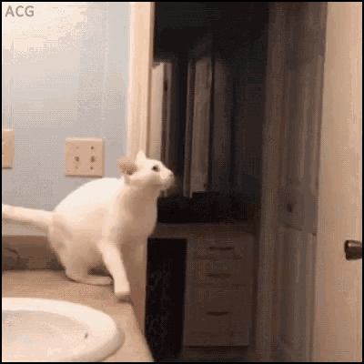
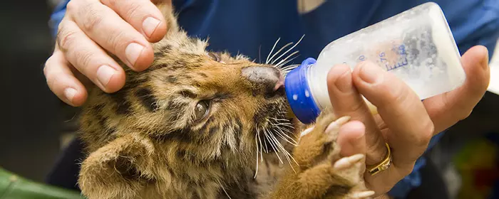
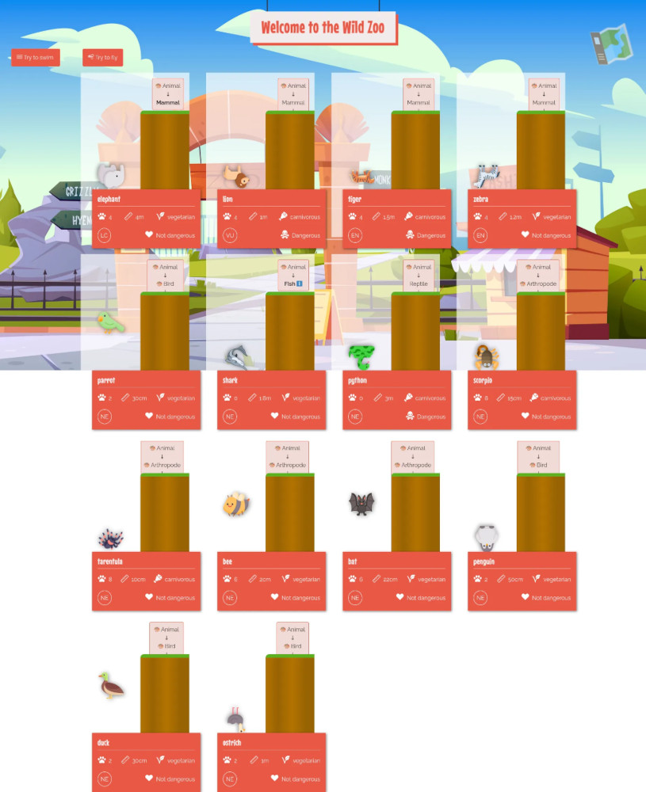

POO10 - Interfaces
Prérequis
Introduction
Passe sur la branche poo10 de ton Wild Zoo. Dans cette quête, tu vas découvrir les interfaces en Programmation Orienté Objet (à ne pas confondre avec les interfaces utilisateur) et comprendre quand et comment les implémenter.
🤓 À la fin de cette quête, tu seras capable de :
- ✅ Comprendre le concept d'interface
- ✅ Créer une interface
- ✅ Implémenter une interface
Définition des interfaces
Les interfaces complètent le mécanisme d'abstraction que tu as vu dans la quête précédente. L'abstraction permet de définir des comportements attendus, sans imposer d'implémentation, tout en restant intimement liée au concept d’héritage : il doit forcément y avoir un lien logique entre la classe mère abstraite et sa fille. Mais dans certains cas, deux classes totalement différentes peuvent avoir un certain nombre de comportements en commun. Il n’est alors pas logique ou possible de définir un héritage (souviens toi, une classe ne peut avoir qu'une seule mère). Les interfaces viennent répondre à ce besoin : définir des comportements communs entre des classes sans héritage.
Prenons un exemple concret : dans un cadre d'héritage, nous pouvons dire que les poissons :fish: savent nager, donc toutes les classes filles de poisson hériteront de cette capacité. Il est possible d'implémenter une méthode swim() dans Fish. Maintenant, une baleine :whale: ou un dauphin :dolphin: va également nager de manière assez proche d'un poisson (queue, nageoire) tout en étant des mammifères. De même, un chien :dog: va pouvoir nager assez bien en battant des quatre pattes, mais tout le monde sait que les chat :cat: sont moins friands de natation. De même, un hippopotame :hippopotamus: sera très à l'aise dans l'eau mais un rhinocéros :rhinoceros: peut-être moins. Coté reptile, un crocodile :crocodile: va nager, une tortue marine :turtle: aussi, mais pas un lézard :lizard:. Côté oiseaux, les canards :duck:, les cygnes :swan: ou les manchots :penguin: seront plus à l'aise en milieu aquatique que l'autruche, etc.
En résumé, certains animaux savent nager, d'autres non ! Et pour ceux qui savent, chacun le fait un peu à sa manière en fonction de son anatomie. On pourrait mettre une méthode abstraite dans l'ancêtre commun de plus haut niveau (ici Animal), permettant ainsi à chacun d'implémenter sa propre manière de nager. Le problème de cette approche est qu'elle force l’implémentation de la méthode également pour les animaux qui ne savent pas nager, ce qui crée du code inutile et doit être évité.
De plus, tu peux aisément imaginer des cas où il n'y a même pas d'ancêtre commun. Imagine que tu crées un drone marin qui "nage" et que tu veuilles comparer ses performances avec des animaux sachant nager. Tu souhaiterais que les deux classes possèdent la méthode swim(), mais il n'y a cependant aucun lien entre un robot et un animal.
C'est donc dans ces cas là : absence de lien d'héritage et/ou comportement non commun à toutes les classes filles, que le concept d'interface sera utilisé. Les interfaces sont souvent comparées à des contrats, qu'une classe implémentant une interface devra obligatoirement suivre. L’interface ne sert à rien d’autre car, comme tu vas le voir, elle ne contient aucun code métier, seulement des définitions de méthodes, ce en quoi elles sont similaires aux méthodes abstraites.
Créer une interface
Créer une interface est assez proche de créer une classe. Il faut créer un nouveau fichier que tu nommeras en UpperCamelCase.
<?php
// fichier src/Swimmable.php
namespace App;
interface Swimmable
{
public function swim(): string;
}
À l'intérieur, tu définieras un namespace et reprendras le même nom pour l'interface que pour le fichier créé. Par contre, au lieu du mot-clé class, il faut utiliser le mot clé interface.
Ensuite, l'interface contient uniquement des définitions de méthodes sans implémentations. Une interface est un peu comme une classe ne contenant que des méthodes abstraites (sans utiliser le mot clé abstract). Note également qu'une interface peut contenir des constantes, mais pas des propriétés. Ici, l'interface attend une seule méthode swim() qui retournera un string. Pour simplifier les choses dans notre zoo, l'implémentation de la nage (différente entre les types d'animaux) se fera simplement par une chaine de caractères expliquant comment l'animal s'y prend pour nager.
Côté nommage, les interfaces sont souvent nommées avec le suffixe "able" (pour montrer qu'elle apporte une capacité, un comportement nouveau) ou avec le suffixe "Interface". Ici, il a été choisi de nommer l'interface Swimmable mais on aurait également pu l'appeler SwimInterface. L'idée est surtout de choisir un type de nommage et de s'y conformer pour toutes les interfaces du projet, par cohérence.
🖥️ Crée l'interface Swimmable dans ton projet WildZoo Un bouton "Try to swim" doit apparaître en haut à droite de la page. Pour l'instant, aucun animal ne se sert de ton interface Swimmable, ce n'est peut-être pas une bonne idée d'appuyer sur le bouton... Si ? Bon essaie...
Click to reveal||||||Que vient-il de se passer ?|||0|||Hide
:clap: Bravo, tu viens de noyer tout ton zoo, la quête est terminée :skull: !
... Bon, non on ne va pas se quitter si proche de la fin, mais prend un peu plus soin de tes animaux quand même !
Ici, aucun animal n'avait implémenté **Swimmable**, donc aucun n'avait le comportement de `swim()`.
Implémenter une interface
Bon, essayons de résoudre cette situation. 🖥️ Commençons par les poissons, qui à priori savent tous nager. Met à jour ta classe Fish comme ci-dessous :
<?php
namespace App\Animal;
use App\Swimmable;
class Fish extends Animal implements Swimmable
{
private int $pawNumber = 0;
public function __construct(string $name)
{
parent::__construct($name, $this->pawNumber);
}
public function swim(): string
{
return 'Je nage grâce à mes nageoires et je respire sous l\'eau';
}
}
Pour utiliser une interface, il faut utiliser le mot clé implements. Si la classe étend une classe mère, le mot clé implements se placera après extends.
Une caractéristique importante des interfaces, est de permettre l'utilisation multiple. Contrairement à l'héritage où l'on ne peut étendre qu'une seule classe, il est possible d'implémenter autant d'interfaces qu'on le désire, séparées par des virgules.
class Daughter extends Mother implements FirstInterface, SecondInterface, ThirdInterface
Remarque SOLID
Tu connais maintenant l'accronyme SOLID, cet ensemble de bonnes pratiques autour de la POO. Le "I" de SOLID signifie Interface Segregation : il vaut mieux créer plusieurs interfaces contenant peu de méthodes mais bien spécifiques à l'interface, plutôt qu'une seule grosse interface fourre-tout qui sera moins modulable. Par exemple, il vaut mieux créer les interfaces Swimmable, Flyable, Walkable, plutôt qu'une grosse interface Movable contenant des méthodes swim(), fly() et walk(). Ainsi, un animal qui se déplace mais qui ne sait pas voler n'a pas à implémenter une méthode fly() qu'il laisserait vide.
Pour faciliter l'organisation et le découpage des interfaces, il est également possible de faire de l'héritage entre interface.
L'interface étant un contrat, si tu n'implémentes pas les méthodes qu'elle contient, tu auras une erreur. Ici tu es donc forcé de créer une méthode swim(). De plus, comme pour les méthodes abstraites, la signature de la méthode sera identique (même nom de méthode, noms et types des paramètres, type de sortie).
Documentation officielle des interfaces en PHP
🖥️ Une fois l'interface implémentée, un petit ℹ️ apparaît à côté du nom de la classe correspondante dans le panneau en haut à droite des cartes d'animaux. Quand une classe mère implémente une interface, la classe fille l'implémente par héritage. De plus, quand tu survoles la carte, en plus de son message, la chaine de caractères retournée par swim() s'affiche également.
Si tu cliques à nouveau sur le bouton "Try to swim", ton requin devrait maintenant réussir à nager ! :tada:
Implémente l'interface Swimmable sur les autres animaux sachant nager : le serpent et l'éléphant, ou amuse toi à en ajouter d'autres.
BONUS : Retour sur l'aquarium
Tu peux corriger l'implémentation de ta classe Aquarium qui n'acceptait que des poissons, afin qu'elle accepte maintenant tous les animaux implémentant Swimmable.
class Aquarium extends Area
{
public function isValid(Animal $animal): bool
{
return $animal instanceof Swimmable;
}
}
Tu remarques que instanceof s'utilise aussi avec des interfaces. Note aussi que, comme tu peux le faire avec un nom de classe, tu peux typer avec un nom d'interface.
Maintenant, ton aquarium accepte tous les animaux capable de nager. Ainsi, si tu souhaites par la suite manipuler les animaux dans ton aquarium, tu es sûr qu'ils auront tous à disposition la méthode swim(), grâce à ce contrat qu'est l'interface.
:muscle: Challenge
Nous avons géré les animaux qui savent nager. À toi de jouer maintenant, fais la même chose avec ceux sachant voler !
- Crée l'interface Flyable contenant une méthode
fly()qui retourne un string. - Tous les oiseaux ne volant pas, il n'est pas pertinent d'implémenter Flyable directement sur Bird. Tu vas passer Bird en classe abstraite puis créer les classe filles suivantes depuis Bird. Pour chacune des classes, crée un objet correspondant dans index.php, les images sont disponibles, et ajoute les à ton zoo :
- Parrot :parrot: qui implémentera Flyable. Dans ce cas il faut modifier l'objet Bird (maintenant classe abstraite) dans index.php pour utiliser cette nouvelle classe Parrot.
- Penguin :penguin: (c'est le manchot en français, c'est un faux ami, car le pingouin, auk en anglais, vole bien lui) : ton manchot implémentera Swimmable mais pas Flyable.
- Ostrich 🦤 qui n'implémentera pas Flyable.
- Duck :duck: qui implémentera Flyable et Swimmable.
- Implémente aussi Flyable sur les insectes :fly: (en réalité, tous les insectes ne volent pas, mais nous allons simplifier pour l'exercice, cependant si tu cherches l'exactitude biologique, libre à toi de créer une classe fille Pterygota (correspondant aux insectes volant) qui elle implémentera Flyable et non Insect.
- Crée la classe Bat :bat:, fille de Mammal, qui implémentera également Flyable.
🖥️ Dès que l'interface Flyable est créée, un nouveau bouton "Try to Fly" apparaît en plus de "Try to Swim".

Validation
Poste une capture d'écran de ton zoo après avoir cliqué sur "Try to Fly". Tous les animaux préexistants et les nouveaux créés doivent apparaître. Tous les animaux sont écrasés au sol :skull: sauf :
- le perroquet :parrot:
- le canard :duck:
- l'abeille :bee:
- la chauve-souris :bat:
:wave: Conclusion
Bravo, tu as fini ce parcours de quêtes POO (et tu ne t'es pas trop mal occupé de tes animaux finalement). N'hésite pas a continuer de t'amuser avec ton code pour étendre les fonctionnalités de ton zoo et t'améliorer. La programmation orientée objet est une compétence absolument essentielle en PHP, mais également dans la plupart des langages de programmation, où tu retrouveras (à quelques variations près) le même vocabulaire et les mêmes mécanismes :-) La POO est bien plus large que ces quelques quêtes, le plus difficile n'étant pas de l'utiliser, mais de réussir à l'utiliser proprement ! Les principes SOLID ou les design patterns, sont des guides pour t'aider à mieux organiser ton code lorsqu'il se complexifie. Cela dépasse le cadre de ta formation actuelle, mais sois curieux, informe toi et, surtout, pratique !

==$==
Quelques exemples des fichiers que tu dois obtenir.
<?php
// src/Flyable.php
namespace App;
interface Flyable
{
public function fly(): string;
}
<?php
// src/Animal/Parrot.php
namespace App\Animal;
use App\Flyable;
final class Parrot extends Bird implements Flyable
{
public function fly(): string
{
return 'Je vole grace à mes longues plumes colorées';
}
}
<?php
// src/Animal/Duck.php
namespace App\Animal;
use App\Flyable;
use App\Swimmable;
final class Duck extends Bird implements Swimmable, Flyable
{
public function swim(): string
{
return 'Je nage grace à mes pattes palmées';
}
public function fly(): string
{
return 'Je vole grace à mes ailes plumées';
}
}
<?php
// src/Animal/Insect.php
namespace App\Animal;
use App\Flyable;
class Insect extends Arthropode implements Flyable
{
private int $pawNumber = 6;
public function __construct(string $name)
{
parent::__construct($name, $this->pawNumber);
}
public function fly(): string
{
return 'Je vole grâce à mes deux paires d\'ailes';
}
}
